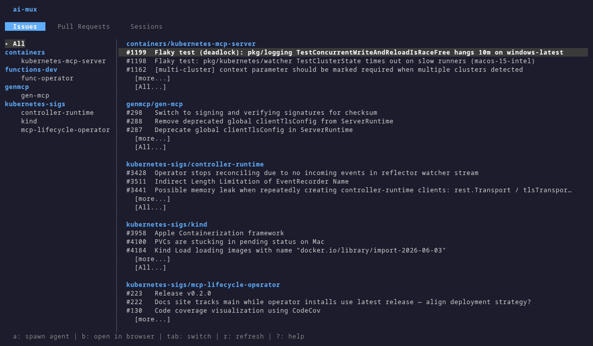
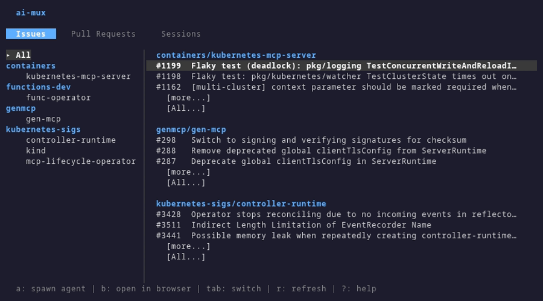
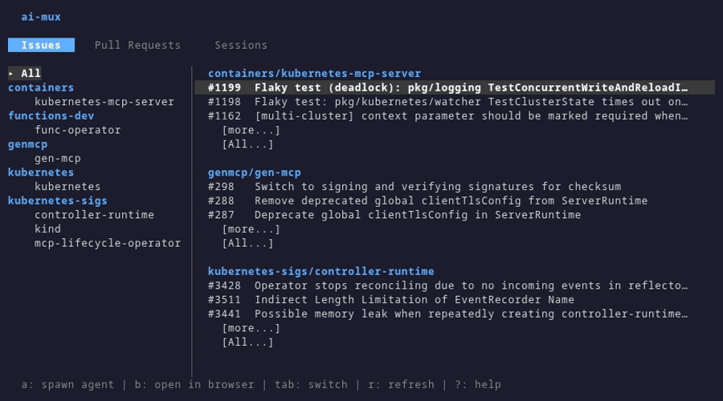

Monitor repos, triage issues, and spawn AI agents to fix them — all from your terminal.
go install github.com/creydr/ai-mux/cmd/ai-mux@latest

Stop context-switching between GitHub, Jira, and your editor.
Monitor issues, PRs, and Jira items across all your repositories in one tabbed interface.
Launch Claude, Gemini, or any AI agent directly from an issue or PR — one keystroke.
Each agent session gets its own git worktree. Run multiple agents in parallel without conflicts.
Pull in Jira boards alongside GitHub. Search, filter, and drill into details without leaving the terminal.
Two steps from install to AI-powered issue triage.
Switch between Issues, PRs, Jira items, and Sessions with tab navigation. Search and filter instantly across all your repos.

Press Enter on any issue, pick your agent, and it starts working in an isolated worktree. Attach to watch it work in real time.
